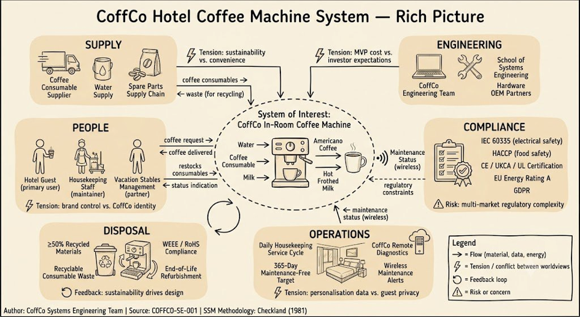
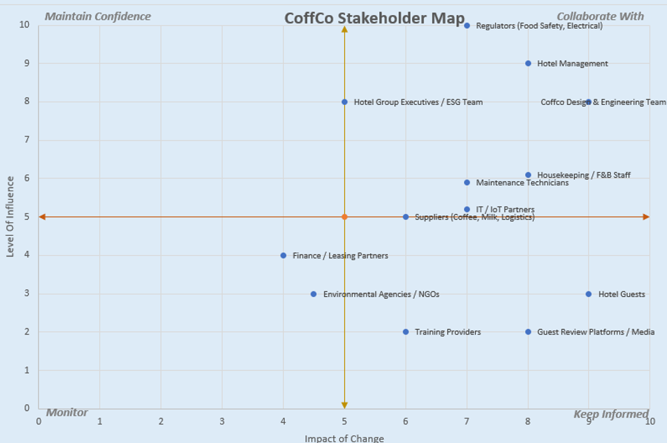

Systems Thinking / Soft Systems Methodology
SOSE 4 Box · stakeholder analysis · CATWOE · root definition · conceptual activity model · real-world comparison
Turn a point of guest dissatisfaction into a point of differentiation for Vacation Stables.
Any guest produces café-quality coffee without training, instruction, or staff assistance.
No room modification, no new utilities — across UK, EU, and US markets.
Support CoffCo's commercial growth and Vacation Stables' brand and sustainability commitments.
Same quality and behaviour in London, New York, or Paris.
Machine deployed at scale across Vacation Stables UK, EU, and US estate.
Working prototype that secures investor confidence and a credible path to production.
Maintenance needs resolved proactively before a guest encounters an inoperable machine.
41 system requirements (COFFCO-SRS-001) verified to acceptance criteria — temperature, pressure, volume, footprint, mass, MTBF, and safety.
MVP demonstration accepted as the basis for scaled deployment funding.
In-room coffee quality rated against the specialty-coffee benchmark from CONOPS.
No guest-reported electrical, burn, or food-safety incidents during deployment.
365-day minimum maintenance-free operation achieved in service.
3. Rich Picture — Problem Situation
The rich picture expresses the CoffCo problem situation as understood before any solution was defined. It captures all key actors, flows, issues, tensions, and feedback loops across six contextual zones — Supply, People, Operations, Disposal, Engineering, and Compliance — with the System of Interest at the centre.

Figure: CoffCo Hotel Coffee Machine System — Rich Picture. All actors, systems, flows, tensions and feedback loops clearly labelled, corresponding to the SOSE 4 Box domains. Author: CoffCo Systems Engineering Team | Source: COFFCO-SE-001 | SSM Methodology: Checkland (1981)
3.1 Stakeholder Map — Influence vs Impact of Change
The stakeholder map positions all identified stakeholders on a power/interest grid to determine the appropriate engagement strategy for each group.

| Quadrant | Strategy | Key Stakeholders |
|---|---|---|
| Collaborate With (high influence, high impact) | Active engagement, co-design decisions, regular structured communication | Regulators (Food Safety, Electrical), Hotel Management, CoffCo Design & Engineering Team |
| Maintain Confidence (high influence, lower impact) | Keep well-informed, involve in key decisions, manage expectations proactively | Hotel Group Executives / ESG Team, Housekeeping / F&B Staff |
| Keep Informed (lower influence, high impact) | Communicate outcomes clearly, ensure satisfaction with the result | Hotel Guests, Guest Review Platforms / Media, IT / IoT Partners |
| Monitor (lower influence, lower impact) | Watch for changes in position, minimal active engagement required | Environmental Agencies / NGOs, Training Providers, Finance / Leasing Partners |
4. CATWOE Analysis
CATWOE was applied to the core system-of-interest to test and refine the root definition. Each element is addressed with specific CoffCo content, consistent with the PDR submission (slide 5).
| Element | CoffCo Analysis |
|---|---|
| C — Customers | Hotel guests (primary — receive the beverage; safety and satisfaction are the output measure). Vacation Stables (commercial beneficiary of enhanced guest experience). Local communities and natural environment (affected by waste, energy, sourcing decisions). |
| A — Actors | CoffCo engineering team (design, build, iterate). CoffCo field service (install, maintain, repair). Hotel housekeeping (operate daily — restock, clean). CoffCo cloud ops (remote monitoring, OTA updates). Third-party test houses (IEC 60335, EMC certification). |
| T — Transformation | INPUT: A Vacation Stables guest with unmet coffee expectations in their hotel room. OUTPUT: A guest who has produced a personalised, café-quality coffee experience on demand, without assistance, within 3 minutes, with confidence that the machine is safe and the environment is unaffected. |
| W — Worldview | Premium hotel guests should not accept a degraded coffee experience in their room. Technology can close this gap reliably and profitably without adding operational burden to hotel staff or guests. Through Life Support is the governing theme because an unreliable machine undermines the entire commercial proposition. |
| O — Owner | CoffCo (product and IP owner). Vacation Stables exercises contractual influence over deployment scope, room placement, branding, and operational procedures within its estate. |
| E — Environment | IEC 60335, HACCP, GDPR, EU energy efficiency regulations; hotel room footprint (300×300×300mm, ≤10kg, no room modification); 110–240V mains (UK/EU/US); variable water hardness; untrained users; guest and sustainability expectations; competitive pressure. |
4.1 Root Definition
5. Conceptual Activity Model
The conceptual activity model defines WHAT the system must do — not HOW it works. It is consistent with the root definition above and structured as a logical activity flow. Activities are grouped into three operational phases: Guest Phase (user-facing), Service Phase (housekeeping), and Management Phase (remote / engineering).
| Ref | Activity | Description |
|---|---|---|
| Guest Phase | ||
| CA-01 | Accept user request | Receive drink type and volume selection from hotel guest without documentation or training. Satisfy SRS 2.1 (unaided operation). |
| CA-02 | Validate readiness | Confirm consumable levels, fluid levels, and system state permit a brew cycle. If not, communicate status clearly. Satisfy SRS 1.7, 1.10. |
| CA-03 | Produce beverage | Execute brewing or frothing cycle to specification. Satisfy SRS 1.1, 1.2, 4.1–4.7. |
| CA-04 | Dispense into mug | Deliver beverage at correct temperature and volume into standard mug within time limit. Satisfy SRS 1.3, 3.1, 4.11. |
| CA-05 | Confirm completion | Indicate cycle complete; return to ready state. |
| Service Phase | ||
| CA-06 | Monitor consumable levels | Detect and communicate low water, low consumable, and full drip tray states to housekeeping. Satisfy SRS 1.7, 1.9. |
| CA-07 | Accept replenishment | Enable tool-free replenishment of water, consumables, and drip tray emptying by untrained housekeeping. Satisfy SRS 2.5. |
| CA-08 | Perform self-maintenance | Execute automated descale cycle at calculated interval; transmit maintenance alerts. Satisfy SRS 1.6, 1.9. |
| Management Phase | ||
| CA-09 | Transmit health status | Provide wireless telemetry of system health, fault conditions, and maintenance requirements to remote operations. Satisfy SRS 1.9. |
| CA-10 | Respond to remote command | Accept OTA firmware updates and remote configuration changes from CoffCo cloud platform. Satisfy SRS 1.9. |
| CA-11 | Manage safety interlocks | Enforce hardware and firmware safety states (SAFE-SHUTDOWN, FLUID-EMPTY) independently of normal control. Satisfy SRS 3.10, 3.11, 3.12, 3.13. |
6. Real-World Comparison — Gaps and Tensions
The conceptual model was compared to the real-world situation. The following table identifies where the conceptual model differs from current practice, and what interventions were carried forward into the requirements and architecture.
| Conceptual Activity | Real-World Gap / Tension | Intervention → SRS / Architecture |
|---|---|---|
| CA-01 Accept user request unaided | Existing hotel machines require documentation or barista skill. No in-room machine achieves unaided first-time use. | SRS 2.1 (unaided operation); two-step brew confirmation for child safety; UI status panel designed without text labels for multi-market deployment. |
| CA-03 Produce beverage to spec | Hotel room power supply varies (110–240V, 50/60Hz). Water hardness varies dramatically across Vacation Stables estate. | SRS 2.3/2.4 (universal power supply, TD-03 interchangeable plug); SRS 1.6 (water hardness tolerance); descale cycle (SRS 1.6 strengthened at Issue 3.0). |
| CA-06 Monitor consumable levels | Hotel housekeeping operates on fixed daily cycles — there is no real-time fault visibility between visits. | SRS 1.9 (wireless maintenance telemetry); cloud ops dashboard; MILK-SPOILAGE-RISK and DRIP-TRAY-FULL telemetry events. |
| CA-11 Manage safety interlocks | Standard domestic coffee machines have no explicit firmware safety state architecture or hardware watchdog. | SRS 3.10 (burn prevention), 3.11 (shock prevention), 3.12 (firmware watchdog), 3.13 (PRV); SAFE-SHUTDOWN and FLUID-EMPTY states; 19-hazard HAZID. |
| CA-08 Self-maintenance | Scale accumulation causes most real-world coffee machine failures but is addressed reactively. No automatic descale scheduling in comparable machines. | SRS 1.6 (descale cycle): automated interval calculation from brew count and water hardness; DESCALE-REQUIRED telemetry alert. |
7. Insights and Interventions
7.1 Key Insights
- The primary problem is not technical — it is the gap between guest expectation and hotel operational capability. The machine must compensate for every limitation of the hotel environment (untrained users, variable water, no technical support) without adding complexity.
- The reliability theme (Through Life Support) was selected because a machine that fails within its first year of deployment destroys the commercial proposition entirely. Every architectural decision is evaluated against its impact on reliability.
- The SSM analysis identified that wireless telemetry is not a convenience feature — it is essential to the maintenance model. Without proactive fault notification, housekeeping cannot intervene before a guest encounters a failed machine. This is why SRS 1.9 is Mandatory.
- The tension between CoffCo IP and hotel operational control means that the machine must be as operationally transparent as possible to housekeeping while keeping all safety-critical functions inaccessible.
7.2 Interventions Carried Forward
- Implementation-neutral consumable requirement — SRS 1.4 and 1.5 avoid specifying capsule, pod, or ground coffee format. CoffCo's IP advantage is in the sealed consumable format design, which must not be revealed in the requirements.
- Through Life Support as governing DfX theme — selected before any architecture was defined; governs all make/buy decisions, modularity choices, and COTS selections.
- Safety by design — 19 hazards identified (HAZID H-01 to H-19); safety provisions embedded in SRS requirements rather than held as a separate category, ensuring safety is a system-level property not a bolt-on.
- Assumption A-09 (guest provides milk; machine refrigerates) — introduced during SSM analysis; generates NR-05 (milk refrigeration) and adds the milk safety chain (HACCP, MILK-SPOILAGE-RISK telemetry).
7.3 Key Assumptions and Boundaries
| ID | Assumption | Implication |
|---|---|---|
| A-01 | Hotel rooms have standard mains power | Universal PSU required (SRS 2.3/2.4); TD-03 interchangeable plug module |
| A-02 | Hotel Wi-Fi available in rooms | TD-06 wireless technology selection deferred — risk if Wi-Fi unavailable |
| A-03 | Mains water supply in hotel rooms | Water reservoir filled by housekeeping; drip tray requires daily emptying |
| A-04 | Housekeeping performs daily service | 365-day interval assumes daily consumable check and drip tray service |
| A-07 | ≥300×300mm desk space available | If hotel rooms have smaller desks, deployment scope reduced |
| A-09 | Guest provides milk; machine refrigerates | Adds refrigeration subsystem, HACCP food safety chain, milk temp telemetry |